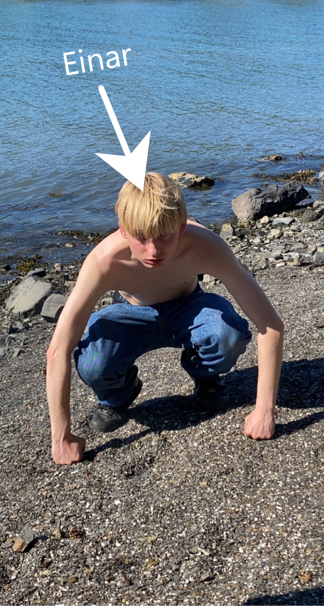

Hjem
Om meg
Quiz
Halla folkens, velkommen til min nettside. Som jeg har bygd med mine egne hender tro det eller ei. Mitt navn er Baar Sigurd Ørstavik Jr den tredje og dette er min historie. Født og oppvokst i Oslo by, kommune og fylke har jeg hatt en ganske gjennomsnittlig by-oppvekst. Det hele startet med en mangel på barnehageplasser. Av denne grunn måtte jeg og mamma reise 40 minutter t-bane hver dag til barnehagen, ikke hvilken som helst barnehage heller, Noehumanistisk barnehage, eller NoeMystisk barnehage som jeg og mamma kalte den. Denne barnehageopplevelsen er det nærmeste jeg har vært en kultdeltager til denne dag. Det var en grunn til at dette var den eneste barnehagen i Oslo med åpne plasser samtidig som hundrevis av barn var hjemmeværende. Barnehagen var opprettet av en liten asiatisk dame, hun var ekstremt streng og jeg husker at flere av de unge barnhagestudentene som jobbet i barnehagen måtte slutte på grunn av den mentale torturen de sto ovenfor. Barnehagen i seg selv var som en ekstrem versjon av steinerskolen. Hver dag startet med en halvtimes meditasjon, om jeg skal være ærlig tror jeg dette var mer for barnehagetantene sin sjelero enn vår. Etter meditasjonen ble vi sluppet ut i bakgården som en flokk hunder, jeg glemte kanskje å si at barnehagen slett ikke var en barnehage, men en nedslitt villa omringa av de høyeste gjerdene en kunne tenke seg. Du kan forestille deg et helt Alkatraz-opplegg, nordkorea-fangeleir om du vil. I de såkalte pausene fikk vi løpe fritt rundt det ene klatrestativet og den 3 kvadratmeters sandkassa uten oppsyn i en time eller to før vi ble henta inn igjen til neste aktivitet. Aktivitetene gikk på rotasjon og besto blandt annet av massasje hvor vi øvde på å massere på hverandre og yoga. Alt dette høres kanskje helt supert ut men når man tenker på at vi var en blanda gjeng med 1-6 åringer blir man kanskje klar over hvor sinnsykt det er å forvente at så små barn skal tilbringe halve den våkne tiden sin i dette fengselet av kroppskontroll og selvinnsikt.
Fortsettelse følger....